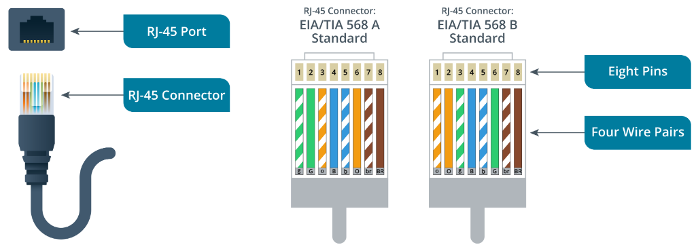
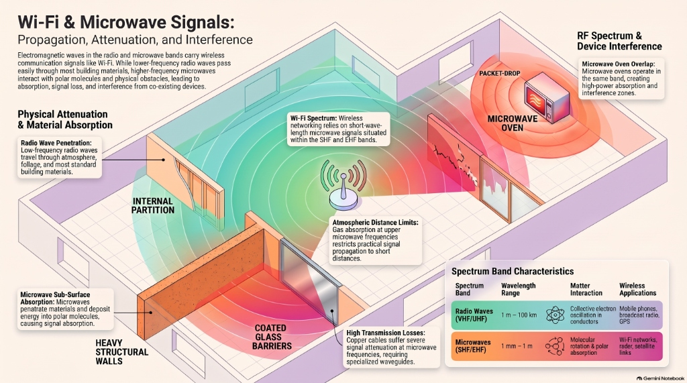

Lesson 4: Computer Networking, Wireless Standards & Virtualisation
A comprehensive guided reading companion exploring how computers communicate across wired and wireless pathways, ports and protocols, IP subnet allocation, Wi-Fi radio frequencies, and modern enterprise virtualisation.
Basic Networking Concepts
What is a Network? (Media, Interfaces & Protocols)
As introduced in Slide 9, a computer network is two or more computing devices linked together to share resources, exchange files, and communicate. Every network on Earth—from a two-computer home office to the global internet—relies on three foundational components:
Network Media (The Pathways)
The physical or electromagnetic channels through which data travels: copper cables (twisted pair Cat 6), fibre optic glass strands, or radio frequency waves through the air (Wi-Fi, Bluetooth).
Network Interface (The Gateway)
The physical hardware boundary where computer circuitry connects to the media—the Network Interface Card (NIC) or wireless radio transceiver. Converts CPU binary pulses into signals.
Network Protocols (The Grammar)
The standardised set of rules and conventions that govern data formatting, addressing, error detection, and acknowledgement (e.g. TCP/IP, Ethernet, Wi-Fi 802.11).
Network Ports & Core Protocols (Slide 11)
As highlighted in Slide 11, an IP address directs traffic to a specific computer, but that computer runs dozens of programs simultaneously (web browser, email client, gaming chat, remote desktop). Network ports are logical software channels (numbered from 0 to 65,535) that direct incoming packets to the exact receiving service:
The Seaport & Dedicated Docking Berth Analogy
The term "Port" in computer networking was intentionally borrowed from maritime shipping harbours. Imagine a busy commercial cargo seaport (like the Port of Southampton or Singapore):
The IP Address is like the geographic location of the harbour. It guides cargo ships across the ocean to the correct city destination in the world (e.g. your server).
Once inside the harbour, a ship cannot just tie up anywhere. It must dock at a specific numbered Docking Berth (Port Number) equipped with the exact machinery needed for its cargo:
- An oil tanker must dock at the petroleum berth with pumping pipelines (Port 443 HTTPS).
- A grain ship cannot dock at the oil pier—it needs the grain elevator berth (Port 53 DNS).
- A container ship docks at the gantry crane berth (Port 22 SSH).
Every computer manages 65,536 virtual docking berths (0 to 65,535). By global agreement through IANA (Internet Assigned Numbers Authority), these berths are identical on every computer on Earth.
Standard Well-Known Ports in IT Support (0–1023)
Network Addresses: Physical MAC vs Logical IP (Slide 12)
In Slide 12, the curriculum introduces the single most fundamental concept in computer communications: the difference between a Physical Address and a Logical Address. Why does every connected device need two completely separate addresses?
Physical vs Logical: What Do These Words Actually Mean?
Hardware Silicon in the Real World vs Software Configuration LogicWe call it a Physical Address because it literally, physically exists in the tangible physical world! You can hold a network card in your hand, and somewhere on that physical circuit board is a silicon microchip where this 48-bit address was permanently laser-etched or "burnt in" (hence the technical term Burnt-In Address / BIA) during factory manufacturing.
We call it a Logical Address because it does not exist in physical silicon — it exists entirely in the software rules and configuration logic of the operating system! It represents where a device is temporarily located inside a network hierarchy, rather than what the physical device is made of.
192.168.1.15. When you sit in the Byte & Brew Cafe, their router assigns you 10.1.2.45. Your physical laptop didn't change, but your logical network location did!
Think of your Physical Address (MAC) like your human DNA, fingerprint, or passport number: it permanently identifies your unique physical self wherever you travel on Earth. In contrast, your Logical Address (IP) is like your hotel room key number or rental flat postcode: while you stay in Room 302, hotel staff deliver mail to Room 302. When you check out and move into a new flat, your room number changes immediately, but your fingerprints stay exactly the same.
Media Access Control (MAC) Address
- Nature: Physical, permanent "burnt-in address" (BIA) hardwired into the network chip during factory manufacturing.
- Size & Format: 48 bits (6 octets) expressed in Base 16 Hexadecimal (e.g.
98-48-27-78-E0-AF). - Global Capacity: Over 281 Trillion unique hardware addresses (2⁴⁸ = 281,474,976,710,656).
- Scope: Operates at OSI Layer 2 (Data Link). Directs data frames between devices on the same local physical network wire.
- Analogy: Like a human's permanent DNA or fingerprint — follows the physical hardware everywhere.
Internet Protocol (IP) Address
- Nature: Logical, temporary address assigned by software (a local router's DHCP service or manual administrator configuration).
- Size & Format: IPv4 is 32 bits (4 octets, 0–255, e.g.
10.1.2.1); IPv6 is 128 bits expressed in hexadecimal. - Global Capacity: IPv4 provides ~4.3 Billion addresses (2³²); IPv6 provides 340 Undecillion addresses (2¹²⁸).
- Scope: Operates at OSI Layer 3 (Network). Allows routers to route data packets across completely different networks worldwide.
- Analogy: Like a postal delivery address or hotel room — changes whenever you relocate to a new network.
The Birth of Packet Switching: The First ARPANET Transmission ("LO")
At 10:30 PM on 29 October 1969, student programmer Charley Kline at UCLA attempted to transmit the word "LOGIN" across telephone lines to a computer at Stanford University via the world's first packet-switched network (ARPANET). Kline successfully typed the letter 'L' and confirmed receipt over the telephone. He then typed 'O' and confirmed receipt. However, when he typed 'G', the Stanford SDS Sigma 7 mainframe crashed! The first message ever sent across the ancestral internet was simply "LO" (short for "Lo and behold!").
How Networks Work
Networking Models: Peer-to-Peer vs Client-Server (Slide 16)
In Slide 16, the lesson examines how network architecture delegates control and resource sharing:
Peer-to-Peer (P2P) Networks
Every connected computer (peer) acts as both a client and a server simultaneously. There is no central administrator. Advantages: Inexpensive and simple to set up for small home networks. Disadvantages: Decentralised passwords, no uniform backup routine, and performance slows as more devices join.
Client-Server Networks
Client devices (workstations, laptops) submit requests, and dedicated high-performance servers fulfil them (Domain Controllers, File Servers, Exchange Servers). Advantages: Centralised security access policies, single-pane backup management, and high scalability. Disadvantages: Higher hardware cost and single points of failure without redundancy.
Network Scopes: LAN, WLAN, WAN & VPNs (Slides 17–18)
Networks are classified by their geographic footprint and transmission ownership:
Core Network Devices: Switches, Routers & Firewalls (Slide 19)
In Slide 19, three core network appliances form the operational spine of enterprise connectivity:
🔀 Network Switch
Operates at Layer 2. Connects multiple devices together on the same local subnet. Builds a dynamic MAC Address Table to forward Ethernet frames directly to the designated destination port, eliminating collisions.
🌐 Network Router
Operates at Layer 3. Connects different, separate networks together (e.g. your private office LAN to the public Internet WAN). Inspects destination IP addresses and forwards packets using routing tables.
🛡️ Network Firewall
Inspects all network packets crossing trust boundaries. Filters inbound and outbound connections according to port numbers, IP addresses, protocols, and stateful inspection rules (default-deny posture).
Wired Media: Twisted Pair & T568A/B Colour Standards (Slide 20)
As detailed in Slide 20, the universal cabling standard in office LANs is Unshielded Twisted Pair (UTP) terminated with standardised RJ-45 (8P8C) modular connectors:
RJ-45 Physical Interface & EIA/TIA 568A vs 568B Colour Standards
Official CompTIA Tech+ Hardware Specification (Slide 20)
The female modular 8P8C receptacle located on network switches, wall data faceplates, patch panels, and computer Network Interface Cards (NICs).
The clear plastic modular plug crimped onto twisted-pair cables. Houses 8 gold-plated pins that pierce wire insulation when crimped.
Starts with the Green pair on Pins 1 & 2 (White/Green, Green). Historically preferred in legacy government, residential, and telecom wiring.
Starts with the Orange pair on Pins 1 & 2 (White/Orange, Orange). The predominant commercial standard across modern UK enterprise networks.
Notice carefully in the diagram: Pins 4 & 5 (Blue / White-Blue) and Pins 7 & 8 (White-Brown / Brown) never change positions between T568A and T568B! The only difference between the two standards is that the Green pair (Pins 1 & 2 in T568A) and Orange pair (Pins 1 & 2 in T568B) swap positions with Pins 3 & 6.
Why Are Wires Twisted? (Crosstalk Cancellation)
Electric currents flowing down copper wires emit magnetic fields that induce noise in adjacent wires (electromagnetic interference / crosstalk). By twisting wire pairs tightly in opposing spirals, the radiated electromagnetic fields cancel each other out, preserving signal integrity across 100-metre cable runs.
T568A vs T568B Colour Pinout Standards
Two wiring standards govern the order of the 8 coloured conductor pins:
- T568B (Commercial Standard): Orange-White, Orange, Green-White, Blue, Blue-White, Green, Brown-White, Brown.
- Straight-Through Cable: Same standard on both ends (T568B ↔ T568B). Connects client to switch.
- Crossover Cable: T568A on one end, T568B on the other. Connects similar devices directly.
Subnet Limits & The Byte & Brew Cafe DHCP Lab
Now, let's explore how IP addressing and subnet boundaries function in an active enterprise environment. Consider a popular bustling cafe operating on a standard /24 subnet (10.1.2.0 with Subnet Mask 255.255.255.0):
Why Can There ONLY Be 256 Addresses on a /24 Subnet?
Recall from Lesson 3 that IPv4 addresses use 32 binary bits divided into 4 octets (8 bits each). A /24 subnet mask (255.255.255.0) locks the first 24 bits for the network name (10.1.2.x). This leaves exactly 8 bits for host devices. Since each bit can only be a 0 or 1, there are mathematically 2⁸ = 256 total combinations (0 to 255).
The Byte & Brew Cafe seats 40 patrons. Fixed hardware (PoS till, receipt printer, office PC, CCTV, router, switch) uses 8 static IPs. That leaves 246 dynamic leases in the DHCP pool. Even if 300 customers visit over the day, they don't sit at once! The router's DHCP Lease Time (set to 60–90 minutes) automatically recycles expired IPs from patrons who leave, keeping the active pool healthy at 40–60 leases.
With 8 bits allocated for hosts, the subnet contains exactly 2⁸ = 256 total IP addresses. Network protocols enforce two mandatory reserved bounds, leaving exactly 254 usable host addresses:
☕ Subnet IP Allocation & Dynamic DHCP Simulator (10.1.2.0 /24)
Watch how the cafe's central router manages its 254 usable IPs. Core devices use Fixed Static IPs, active patrons receive Dynamic DHCP Leases, vacated tables enter a temporary Reserved / Grace Hold bound to the device's hardware MAC address, and expired leases are automatically recycled for new arrivals.
Why 281 Trillion Unique MAC Addresses?
Because a MAC address is 48 bits long, the total number of unique combinations is 2⁴⁸ = over 281 Trillion unique physical addresses. Unlike IP addresses (which are temporary and reused), a MAC address is permanently burned into silicon at the factory (Burned-In Address / BIA). Every Wi-Fi chip, Ethernet NIC, smartwatch, smart bulb, and laptop ever manufactured on Earth needs a unique physical identity that never clashes. 281 trillion allows roughly 35,000 unique network chips for every human being alive today!
48-Bit MAC Address & Hexadecimal Decomposition Tool
How Enterprise Networks Handle Thousands of Devices
A large corporate headquarters, university campus, or hospital easily has 2,000 to 20,000 devices active simultaneously. If a single standard /24 subnet only supports 254 hosts, how do enterprise architects engineer networks to scale?
Instead of a /24 (8 host bits = 254 hosts), enterprise teams borrow prefix bits to expand the host space:
- • /23 (255.255.254.0) = 510 hosts
- • /22 (255.255.252.0) = 1,022 hosts
- • /16 (255.255.0.0) = 65,534 hosts
Why NOT put 5,000 PCs on one huge /16 subnet? Broadcast Storms! Every ARP query would flood all 5,000 PCs. Instead, engineers divide the network into isolated Virtual LANs (VLANs):
- • VLAN 10: Staff Laptops (10.50.10.0/24)
- • VLAN 20: VoIP Phones (10.50.20.0/24)
- • VLAN 30: Guest Wi-Fi (10.50.30.0/24)
- • VLAN 40: CCTV & Doors (10.50.40.0/24)
High-performance Layer 3 Switches route traffic securely between VLANs using Access Control Lists (ACLs). Guests on VLAN 30 can reach the internet, but are strictly blocked from touching database servers on VLAN 50.
Small Wireless Network Specifications
Wireless Network Standards & Wi-Fi Generations (Slide 25)
Wireless local area networks (WLANs) transmit data using radio frequency (RF) modulation governed by the IEEE 802.11 standard family. In recent years, the Wi-Fi Alliance adopted consumer-friendly generational branding:
IEEE 802.11 Wireless Standards & Generations Specification Matrix
Chronological Evolution • Frequency, Throughput & Physical Coverage BoundsWhile the Wi-Fi Alliance assigns consumer generation numbers (Wi-Fi 4 through Wi-Fi 7) to mainstream equipment, the IEEE standardises specialised protocols across the entire radio frequency spectrum — ranging from long-range smart meters (802.11ah Sub-1 GHz) to extreme short-range multi-gigabit wireless docking (802.11ad/ay at 60 GHz):
| IEEE Standard | Wi-Fi Gen | Year | Frequency | Max Data Rate | Max Range (Indoor / Outdoor) |
|---|---|---|---|---|---|
| 802.11 | Legacy Baseline | 1997 | 2.4 GHz | 2 Mbps | 20 m indoor • 100 m outdoor |
| 802.11 a | Legacy Standard | 1999 | 5 GHz | 54 Mbps | 35 m indoor • 120 m outdoor |
| 802.11 b | Legacy Standard | 1999 | 2.4 GHz | 11 Mbps | 35 m indoor • 140 m outdoor |
| 802.11 g | Legacy Standard | 2003 | 2.4 GHz | 54 Mbps | 38 m indoor • 140 m outdoor |
| 802.11 n | WiFi 4 | 2009 | 2.4/5 GHz | 600 Mbps | 70 m indoor • 250 m outdoor |
| 802.11 ac | WiFi 5 | 2013 | 5 GHz | 6.9 Gbps | 35 m indoor |
| 802.11 ad | WiGig | 2012 | 60 GHz | 8.1 Gbps | 3.3 m indoor (Short range / line-of-sight) |
| 802.11 ah | HaLow (IoT) | 2017 | Sub 1 GHz | 347 Mbps | 1 km outdoor (Extended long range) |
| 802.11 ax | WiFi 6 | 2021 | 2.4/5/6 GHz | 9.6 Gbps | 30 m indoor • 120 m outdoor |
| 802.11 ay | Next-Gen mmWave | 2021 | 60 GHz | 303 Gbps | 10 m indoor • 100 m outdoor |
| 802.11 be | WiFi 7 | 2024 | 2.4/5/6 GHz | 46.1 Gbps | 30 m indoor • 120 m outdoor |
Wireless Speed, Range & RF Interference (Slide 26)
Unlike copper cables where electrical signals are shielded inside insulated plastic jackets, wireless radio waves broadcast through open air. As detailed in Slide 26, real-world wireless performance is dictated by physical material obstacles and radio frequency interference:
Wi-Fi & Microwave Signal Propagation, Attenuation & Interference
Environmental Absorption, Reflection & RF Channel Contention (Slide 26)
Standard drywall plasterboard and timber studs permit easy radio wave penetration with minimal signal degradation.
Dense reinforced concrete, stone, and brick absorb microwave energy into polar molecules, cutting Wi-Fi range and creating signal shadows.
Modern office double glazing with low-emissivity (low-E) metallic coatings reflects and absorbs high-frequency microwave signals.
Domestic microwaves cook food using high-power 2.45 GHz radiation, creating intense RF noise that completely drowns out 2.4 GHz Wi-Fi channels.
Wireless Frequency Bands: 2.4 GHz vs 5 GHz vs 6 GHz (Slide 27)
In Slide 27, frequency is defined in Hertz (Hz) — the number of wave cycles per second. The physics of radio waves dictates an inescapable trade-off: lower frequencies travel farther through walls, while higher frequencies carry vastly more data:
Maximum Coverage & Range
Wavelength: ~12 cm. Penetrates walls and solid furniture with minimal signal loss. Drawbacks: Crowded with only 3 non-overlapping channels (1, 6, 11) and vulnerable to household interference.
High Speed & Low Congestion
Wavelength: ~6 cm. Offers dozens of non-overlapping channels and channel bonding (up to 160 MHz width). Ideal for 4K video streaming and gaming, but struggles to penetrate thick masonry walls.
Ultra-Wide High Throughput
Opens up 1,200 MHz of brand-new spectrum. Exclusively reserved for modern Wi-Fi 6E/7 hardware with zero backwards-compatibility overhead from legacy 802.11b/g clients.
The Whale vs Dolphin Analogy: Understanding Wi-Fi Frequencies in Nature
In nature, sound waves and electromagnetic radio waves follow the exact same physical frequency rules. We can easily understand 2.4 GHz vs 5/6 GHz by observing marine biology:
Blue whales communicate using deep, low-frequency infrasound rumbles (10 Hz to 40 Hz). Because low-frequency waves are long, rolling pulses, they are rarely absorbed or scattered by water molecules. A whale's low-frequency song can travel hundreds of miles across entire oceans and bend around underwater mountains.
Dolphins communicate using rapid, high-frequency ultrasonic clicks and whistles (up to 150,000 Hz). These rapid wave cycles carry immense amounts of detailed echolocation data, allowing dolphins to "see" tiny fish in 3D. However, high-frequency waves lose their energy rapidly and are quickly absorbed and scattered by water.
Securing Small Wireless Networks: WPA2, WPA3 & Guest Isolation
Because radio signals broadcast indiscriminately through building walls and into parking lots, wireless encryption is mandatory:
WPA2 vs WPA3 Personal (SAE)
WPA2 Personal (AES-CCMP): Relies on a shared Pre-Shared Key (PSK). Vulnerable to offline dictionary brute-force attacks if an attacker captures the 4-way authentication handshake.
WPA3 Personal (Simultaneous Authentication of Equals - SAE): Provides forward secrecy and immune against offline dictionary attacks, even if users choose simple passphrases.
Guest Network Isolation
In public environments (like our cafe), routers deploy Guest Network Isolation. This places patrons on a separate VLAN where devices can access the public internet, but are strictly blocked from communicating with each other or accessing internal POS payment tills and servers.
Virtualisation of the Network
What is Virtualisation? ("Computers in Computers" • Slide 31)
As illustrated in Slide 31, virtualisation is the technology that allows you to run multiple simulated computer systems (Virtual Machines / VMs) simultaneously on a single physical computer (the Host). Each VM behaves like an independent physical machine with its own operating system (the Guest OS), virtual CPU, RAM, storage disk, and virtual network card.
Normally Hardware Runs Software — In a VM, Software Simulates Hardware
To understand why virtualisation works so seamlessly, consider the fundamental physics of computing:
In physical computing, physical silicon circuits, CPU registers, motherboard buses, and copper traces manage electrical high and low voltages (1s and 0s) to execute software operating systems like Windows or Linux.
What is physical hardware really doing at the lowest level? It is simply managing 1s and 0s! Therefore, an intelligent software program (the Hypervisor) can simulate that exact hardware logic entirely in code.
.vmdk disk files) that can be cloned, paused, or moved across the globe in seconds!
1. Hardware Consolidation
In traditional IT, a company bought 10 separate physical server towers (one for email, one for files, one for accounting). With virtualisation, a single high-spec server hosts all 10 workloads as isolated VMs, slashing electricity, rack space, and cooling costs.
2. Snapshot Recovery
Technicians can take a virtual snapshot of a VM's state in seconds before applying risky software patches or updates. If the update fails, the VM can be rolled back instantly without downtime.
3. Sandboxed Testing
Malware researchers and support technicians can open suspicious email attachments or test unknown scripts inside a completely isolated guest VM with zero risk to the host computer.
Hypervisors: Type 1 (Bare-Metal) vs Type 2 (Hosted) (Slide 32)
A hypervisor (or Virtual Machine Monitor) is the software layer that intercepts requests between guest operating systems and the underlying physical CPU, RAM, and storage:
Type 1 Hypervisor (Bare-Metal)
Installs directly on the physical server hardware with no underlying host operating system. The hypervisor acts as its own lightweight operating system kernel.
Maximum performance, lowest latency, standard across data centres and cloud providers.
Type 2 Hypervisor (Hosted)
Runs as an application inside a standard existing desktop operating system (like Windows 11 or macOS).
Simple to install, ideal for developers, students, and tier-1 IT support testing labs.
Hardware Resource Allocation & Virtual Hardware (Slide 33)
In Slide 33, configuring a Virtual Machine involves provisioning virtualised representations of physical server hardware:
🖥️ VMware ESXi 8.0 Hypervisor Resource Allocation Manager
Careers in Networking & Infrastructure
Professional Roles in Network Infrastructure (Slide 36)
In Slide 36, learners research the three primary tiers of network infrastructure careers:
Network Administrator / NOC Tech
Day-to-day operations: managing DHCP scopes, configuring switch VLANs, provisioning VPN credentials, monitoring packet latency in Network Operations Centres (NOC), and troubleshooting client connectivity issues.
Network Engineer
Hands-on configuration of enterprise routers (Cisco, Juniper), next-generation firewalls, Wi-Fi 6 wireless controllers, dynamic routing protocols (BGP, OSPF), and high-availability server load balancers.
Network Architect
Designs complex multi-site enterprise topologies, hybrid cloud WANs (AWS DirectConnect / Azure ExpressRoute), disaster recovery failover sites, and 10-year technology modernisation roadmaps.